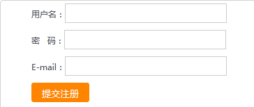

PHP通过session判断防止表单重复提交实例，当用户提交表单后，为防止重复操作，通过session来判断是否为初次提交，否则让他返回到之前表单页面。

当前表单页面is_submit设为0
1 SESSION_START();
2 $_SESSION['is_submit'] = 0;
3 <form id="reg" action="post.php" method="post">
4 <p>用户名：<input type="text" class="input" name="username" id="user"></p>
5 <p>密 码：<input type="password" class="input" name="password" id="pass"></p>
6 <p>E-mail：<input type="text" class="input" name="email" id="email"></p>
7 <p><input type="submit" name="submit" class="btn" value="提交注册"/></p>
8 </form>
若是提交表单了，设当前'is_submit为1，若是刷新post.php，那么将执行else代码
1 SESSION_START();
2 if (isset($_POST['submit'])) {
3 if ($_SESSION['is_submit'] == '0') {
4 $_SESSION['is_submit'] = '1';
5 echo "代码块，要做的事，代码...<a onclick='history.go(-1);' href='javascript:void(0)'>返回</a>";
6 } else {
7 echo "请不用重复提交<a href='index.php'>PHP+SESSION防止表单重复提交</a>";
8 }
9 }
本文转自：https://www.sucaihuo.com/php/437.html 转载请注明出处！